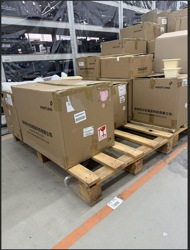
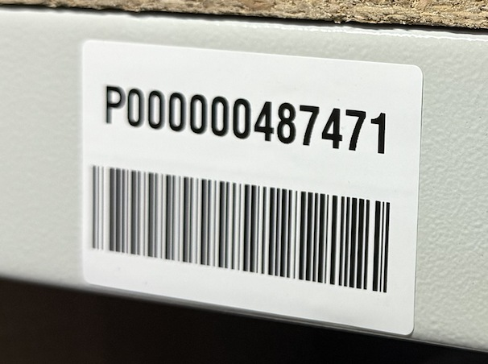
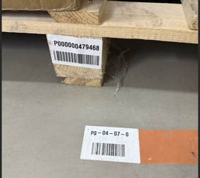
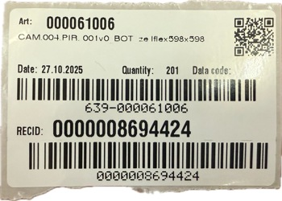
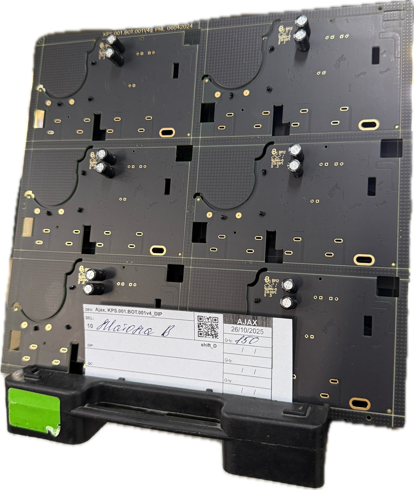
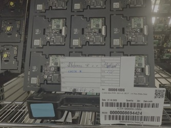
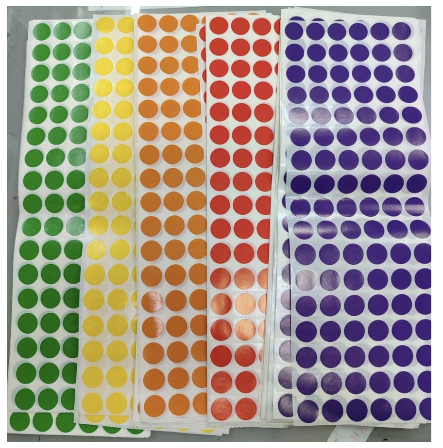
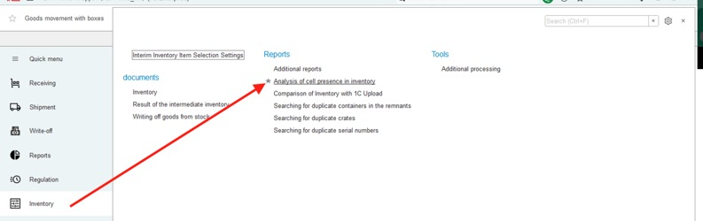
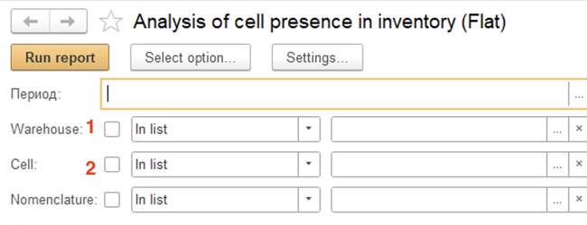

Mục đích
Ghi nhận đúng tồn thực tế theo mã, số lượng, đơn vị, trạng thái và vị trí.
Bản xem trước nội dung để anh và Kho rà soát. Không đăng nhập, không ghi điểm, không chứng nhận năng lực PDA.
Ghi nhận đúng tồn thực tế theo mã, số lượng, đơn vị, trạng thái và vị trí.
A đếm; B kiểm độc lập; C gán Box → P-number → ô. Ba người khác nhau trên cùng dữ liệu.
A2 nhập/in nhãn SFP; PC quản lý phiếu; PDT thực hiện phiếu; Controller xử lý lỗi theo quyền.
GL/WCM kiểm soát phạm vi và báo tiến độ; Kho hỗ trợ WMS; Audit Team điều phối và xác nhận điều chỉnh.
Không suy vai kiểm kê từ chức danh. Một GL có thể được giao Controller nhưng phải sát hạch và có phạm vi, quyền phù hợp. Người A không trở thành B trên hộp mình vừa đếm. Phân vai lại phải lưu người, phạm vi và thời điểm. Hoàn thành bài học không đồng nghĩa được cấp quyền WMS.
Nguồn: AG03-WH-092_A · 4; 6.2; 6.3
Hoàn thành SPR và các chuyển giao cả vật lý lẫn hệ thống; xác nhận mốc khóa do ban kiểm kê thông báo.
Không chuyển vật tư/SFP giữa các khu vực. Giữ nguyên hiện trạng và báo GL/WCM khi có yêu cầu khẩn.
Không tự điều chỉnh 1C hoặc tạo chứng từ lùi ngày. Ghi mã, ô, lượng, lỗi và báo đúng tuyến.
Tiếp tục giữ khóa. Ngày kết thúc dự kiến không tự cho phép mở lại.
Kịch bản trao đổi: feeder được yêu cầu đưa gấp PCB sang Assembly. Học viên phải từ chối chuyển trong thời gian khóa, giữ hàng tại vị trí và báo người phụ trách. App là mô phỏng đào tạo, không có nút giải phóng kho thật. Việc mở lại do Audit Team thông báo sau điều chỉnh.
Nguồn: AG03-WH-092_A · 6.1; 6.2; 6.3; 8

SPR hoàn tất; FG về kho FG; NVL thừa trả kho; lỗi về MRB theo quy trình. Kiểm tồn âm, transit và Clarify.
Mã/phiên bản/màu/trạng thái tách riêng. REF, NG, repair, blocked nhận diện riêng; hộp kê pallet gỗ.
Đối chiếu 1C; cách ly và dán đỏ “DO NOT COUNT DURING INVENTORY”. Không tính lại như tồn bình thường.
Ô đúng bộ phận, loại Storage; tạo qua ITSM. Chốt người, tài khoản, đơn vị tính, PDA, PC, máy in và màu tem.
Không áp dụng reset toàn bộ ô một cách mặc định. Chỉ thực hiện thao tác reset theo trường hợp và hướng dẫn được Kho/WMS cho phép. Thiết bị chưa ghi nhận tài sản cố định được kiểm kê như vật tư theo tài liệu nguồn. Danh sách kho, ô, REF và màu tem phải lấy bản đã chốt cho đợt 2026; ảnh bảng ô trong tài liệu không phải master đang hoạt động.
Nguồn: AG03-WH-092_A · 6.1


Mã hộp nằm trên nhãn cùng tên hàng và số lượng. Theo SOP: 13 ký tự, thường bắt đầu bằng số 0.
Mã pallet/container WMS: 13 ký tự, bắt đầu 9 hoặc P theo SOP. Không phải mã hàng.
Mã vị trí gồm chữ và số có dấu gạch nối; đọc đúng ô tại vị trí thực tế.
Kiểm mã hàng, phiên bản/màu, đơn vị và số lượng; sau quét đọc phản hồi hệ thống.
Ảnh nhãn cũ trong Word có thể hiển thị RECID hoặc định dạng lịch sử khác mô tả chung của SOP. Không tự hard-code chỉ dựa vào độ dài để chặn nhãn thật; Kho/IT xác nhận trường barcode và định dạng hiện hành trước tích hợp thiết bị. Mã SIM-ASV trong app là mã huấn luyện, cố ý không dùng làm mã WMS thật.
Nguồn: AG03-WH-092_A · 3.12–3.14; 6.2

Một kệ/pallet tại một thời điểm, từng hộp riêng. Xác nhận đơn vị và quy cách trước khi ghi.
Nếu chưa mở và còn nguyên vẹn như nhận từ nhà cung cấp: không bắt buộc mở đếm lại.
Dùng Writing-off materials from Box theo đúng tài khoản/quyền; in nhãn đúng, bỏ nhãn cũ. Nếu chưa có quyền, báo người có quyền.
Báo Audit Team để điều chỉnh và in lại. Khi đúng, A đánh dấu ✓ xanh, không che dữ liệu.
Ví dụ: nhãn 20, thực tế 18. Ghi 18, giữ truy vết và xử lý bằng công cụ đúng quyền; không gõ 20 để hết lệch. Một gói 5 pcs và một pcs khác đơn vị. Hộp đã mở không được suy số từ số hộp. Trước sang kệ khác kiểm mọi hộp đã có dấu A và báo hoàn tất bước.
Nguồn: AG03-WH-092_A · 6.2.1


Mỗi hộp/pallet ghi riêng mã và lượng. Không gửi quá 5 hộp/pallet mỗi lần.
Một dòng = một hộp/pallet; định dạng mã hàng – số lượng. Đúng thread bộ phận/nhóm dùng máy in.
A2 xử lý tuần tự, dùng Production Release Registration, in và kiểm nhãn, nhóm nhãn đúng yêu cầu rồi phản hồi đã sẵn sàng.
Kiểm mã/lượng trên từng nhãn trước dán đúng hộp. Sai nhãn phải theo tuyến Audit Team, in lại nhãn đúng.
Có thể nhiều A nhưng chỉ một A2 trên một bộ phận/nhóm trong cách tổ chức SOP. App mô phỏng thread nội bộ, không gửi Chat thật. Bài tập phải giữ hai hộp cùng mã thành hai dòng, không gộp. Sau khi A dán nhãn, B mới kiểm độc lập và C mới gán. A2 và PC là các năng lực khác nhau dù cùng một người có thể được giao nếu được duyệt.
Nguồn: AG03-WH-092_A · 6.2.2

Đối chiếu hàng thực tế, chứng từ đi kèm và nhãn; so số thực tế với nhãn từng hộp.
Dán tem 1 lên nhãn; với NVL chồng dấu ✓ xanh, không che chữ/số/barcode.
Báo Controller; hộp sai chưa được tem 1. Sau sửa phải kiểm lại, không dán tem trước.
Rà hộp thiếu tem và báo hoàn tất. Màu thực tế lấy từ thông báo Kho cho đợt kiểm kê.
Người kiểm độc lập phải có danh tính khác A trên dữ liệu đang xét. Không xem nhãn rồi tin số mà bỏ kiểm hàng. Chỉ tem dán không chứng minh đã làm đúng nếu thiếu kiểm thực tế. Không mặc định tem 1 vàng hay tem 2 xanh: trong app dùng nhãn số và cấu hình màu đã được Kho xác nhận.
Nguồn: AG03-WH-092_A · 6.2.1–6.2.2
Mọi hộp trên kệ/pallet phải có tem 1. Thiếu: dừng hộp và báo GL/Controller.
Box → đúng P-number; P-number → đúng ô thực tế. Kiểm kết quả sau từng thao tác.
Dán chồng lệch tem 1 để vẫn nhìn được cả hai, không che dữ liệu nhãn.
Tìm tồn chưa gán và xử lý theo quyền; kết quả là receiving trống, không tự chuyển hàng đi cho hết tồn.
Scanner bíp chỉ báo nhận mã, không tự chứng minh giao dịch đúng. Nếu quét nhầm nhưng hệ thống chưa xác nhận, dừng và kiểm lại; không lưu gán sai. Khi mất mạng kiểm trạng thái đã ghi trước khi thử lại để tránh trùng. Người C phải khác A và B trên cùng dữ liệu.
Nguồn: AG03-WH-092_A · 6.2.1–6.2.2
Tất cả khu vực đã xong chuẩn bị, có tem 1+2 và thông báo Audit Team qua checklist Jira bước 2.
Tạo phiếu theo từng kệ/ô pallet; đóng cửa sổ tài liệu sau tạo để tránh reset tồn. Giao đúng phiếu cho PDT.
Làm tuần tự từng phiếu. Hoàn tất phiếu được giao mới dán tem 3 lên các ô đã quét, rồi báo PC.
Kiểm kết quả và chuyển Completed. Rà phiếu, các ô service phải trống, báo GL/Supervisor.
Đóng cửa sổ sau tạo là hành động khác chuyển trạng thái Completed cuối quy trình. Không dán tem 3 lên hộp để thay tem 1/2; tem 3 thuộc ô đã quét sau hoàn tất phiếu. Một khu vực xong riêng lẻ chưa đủ mở kiểm kê WMS khi khu khác chưa chuẩn bị xong.
Nguồn: AG03-WH-092_A · 6.3


Analysis of cell presence in inventory; chọn đúng kỳ và kho/ô. SOP khuyến nghị lọc theo ô để chính xác hơn.
Xác minh bỏ sót; thực hiện kiểm kê bổ sung. Không xóa ô để làm báo cáo đẹp.
Xác minh thực tế, xử lý loại bỏ theo quy trình và đúng quyền. Không tự suy từ màu đỏ.
Nhóm kiểm soát kiểm mẫu độ chính xác/gán/độ phủ; đánh X đen trên tem bước được kiểm. Checklist Jira 3 phản ánh việc đã làm.
Ảnh báo cáo lấy từ Word để nhận diện menu và vùng lọc, không phải ảnh hiện trường 2026. Chọn kỳ sai có thể làm kết quả đủ/thiếu sai. Rà tất cả ô thuộc phạm vi, kể cả khu phụ, sửa chữa và service. Chữ ký không thay cho hành động và bằng chứng.
Nguồn: AG03-WH-092_A · 6.3.5–6.3.6; 6.4
Audit Team tổng hợp WMS–1C trong 1 ngày làm việc sau xác nhận hoàn tất; Sản xuất Việt Nam kiểm lệch trong 1 ngày làm việc từ khi nhận.
In Balance of Goods in Warehouse theo mã, có tất cả ô và lượng. Dùng Stock Balance trên PDT, ghi thực tế và đánh dấu đã kiểm.
Hệ thống A32+B10=42. Thực tế A30+B10=40. Chênh lệch thực tế − hệ thống = −2; không bù trừ mã/kho/trạng thái.
Mọi lệch có incident. PM+Warehouse Lead RCA trong 1 tuần làm việc từ file cuối; CAPA có thay đổi cụ thể, chủ trì, hạn và bằng chứng hiệu lực.
Trình tự RCA bắt buộc: chứng từ đã hạch toán → tiêu hao/định mức → lỗi/rework → lịch sử di chuyển → kiểm thực tế → nguyên nhân gốc. Kho ký danh sách kho trong Closing of Intermediate Inventory, Audit Team điều phối điều chỉnh qua người đúng quyền. Mục tiêu điều chỉnh VN 1 ngày cho tỷ lệ lệch khoảng 5%, có thể kéo dài khi nhiều hơn; không tự hứa đóng mọi lệch trong 24 giờ.
Nguồn: AG03-WH-092_A · 6.5; 7.1–7.6
Chỉ khôi phục báo cáo và luồng vật tư sau thông báo hoàn tất điều chỉnh. Không tạo chứng từ lùi vào kỳ kiểm kê.
Jira Inventory Correction: mã 1C, tên, lượng, mô tả lỗi, chứng từ liên quan nếu có, nguyên nhân; báo Supervisor/Warehouse Lead.
Người đúng quyền xử lý; theo dõi PDCA/CAPA hằng tuần trong 2 tháng sau kiểm kê theo nguồn.
Đủ bài học + lý thuyết + mô phỏng + sát hạch PDA thật; vai A2/PC/Controller có bài bổ sung. Giao vai cần WCM/Kho xác nhận riêng.
Ngưỡng90, thời lượng và cấu trúc bài thi trong kit là đề xuất triển khai đào tạo, không phải con số quy định trong SOP. Một người xem 100% bài không được tự xác nhận biết dùng máy thật. WCM xem danh sách thiếu điều kiện theo tên và kíp, không dùng số lượt thi thay số người.
Nguồn: AG03-WH-092_A · 8; 9; quy tắc đào tạo đề xuất